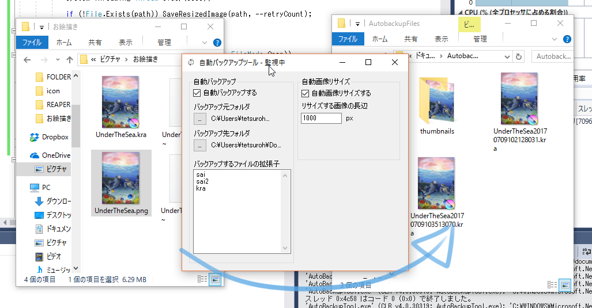

自動バックアップツール
指定したフォルダにある、特定の拡張子のファイルが保存されるたびにバックアップを取ります。

利用規約を読んで同意できた方のみご使用ください。
インストール方法
setup.exeを実行するだけ。 WindowsによってPCが保護されましたというダイアログが出ることがあります。 詳細情報→実行を選んでインストールしてください。
使い方
このソフトは指定したフォルダの変更を監視し、作成されたり変更されたファイルのバックアップをとります。 バックアップをとるのは指定した拡張子のファイルだけです。 例えばSAIなら[sai]クリップスタジオなら[clip]が拡張子です。 拡張子は改行区切りで入力してください。
監視フォルダ(バックアップ元)はデフォルトでマイピクチャになっています。変更もできます。
バックアップ先はデフォルトでマイドキュメントのAutobackupFilesというフォルダです。変更もできます。
画像の自動リサイズはいまはpngだけ対応してます。 リサイズした画像はバックアップ先の中のthumbnailsフォルダに入ります。 リサイズした画像は同じ名前のものは上書きされます。
検討中の機能
- Twitterの画像劣化対策に1px透過してリサイズする機能
- 複数のフォルダを監視する機能（なるべくシンプルにしたいのでちょっと微妙）
利用規約
A. 本ソフトウェアは Everyone’sWare です。このソフトを手にした一人一人が、 ご自分の作ったものを扱うのと同じように、自由に利用することが出来ます。
A-1. フリーウェアです。作者からは使用料等を要求しません。 A-2. 有料無料や媒体の如何を問わず、自由に転載・再配布できます。 A-3. いかなる種類の 改変・他プログラムでの利用 を行っても構いません。 A-4. 変更したものや部分的に使用したものは、あなたのものになります。 公開する場合は、あなたの名前の下で行って下さい。
B. このソフトを利用することによって生じた損害等について、作者は 責任を負わないものとします。各自の責任においてご利用下さい。
C. 著作者人格権は あやちぎん に帰属します。著作権は放棄します。
D. 以上の３項は、ソース・実行バイナリの双方に適用されます。
ソースコード
Githubで公開してます。